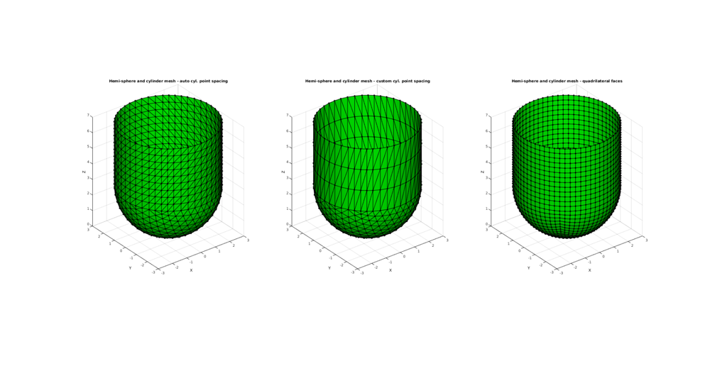

hemiSphereCylMesh
Below is a demonstration of the features of the hemiSphereCylMesh function
Contents
clear; close all; clc;
Plot settings
figColor='w'; figColorDef='white'; fontSize=8; faceAlpha=1; lineWidth=1; markerSize1=10;
CONTROL PARAMETERS
S1.sphereRadius=3; %Sphere radius S1.nRefine=2; %Number of refinement steps for sphere regions S1.cylinderHeight=4; %Height of the cylindrical part S1.cylinderStepSize=[]; %Aproximate desired node spacing for cylindrical part, empty uses spacing of hemi-sphere mesh S1.patchType='tri'; S2.sphereRadius=3; %Sphere radius S2.nRefine=2; %Number of refinement steps for sphere regions S2.cylinderHeight=4; %Height of the cylindrical part S2.cylinderStepSize=1; %Aproximate desired node spacing for cylindrical part, empty uses spacing of hemi-sphere mesh S2.patchType='tri'; S3.sphereRadius=3; %Sphere radius S3.nRefine=4; %Number of refinement steps for sphere regions S3.cylinderHeight=4; %Height of the cylindrical part S3.cylinderStepSize=[]; %Aproximate desired node spacing for cylindrical part, empty uses spacing of hemi-sphere mesh S3.patchType='quad';
CREATING A SURFACE TRIANGULATION COMPOSED OF A MERGED HEMI-SPHERE AND CYLINDER
[Ft1,Vt1]=hemiSphereCylMesh(S1); [Ft2,Vt2]=hemiSphereCylMesh(S2); [Ft3,Vt3]=hemiSphereCylMesh(S3);
PLOTTING MODEL
hf=figuremax(figColor,figColorDef); subplot(1,3,1); hold on; title('Hemi-sphere and cylinder mesh - auto cyl. point spacing','FontSize',fontSize); xlabel('X','FontSize',fontSize); ylabel('Y','FontSize',fontSize); zlabel('Z','FontSize',fontSize); hp=patch('Faces',Ft1,'Vertices',Vt1); set(hp,'FaceColor','g','EdgeColor','k','FaceAlpha',faceAlpha,'LineWidth',lineWidth,'Marker','.','MarkerSize',markerSize1); % [hn]=patchNormPlot(Ft,Vt,0.3); view(3); axis tight; axis equal; grid on; camlight('headlight'); lighting phong; set(gca,'FontSize',fontSize); drawnow; subplot(1,3,2); hold on; title('Hemi-sphere and cylinder mesh - custom cyl. point spacing','FontSize',fontSize); xlabel('X','FontSize',fontSize); ylabel('Y','FontSize',fontSize); zlabel('Z','FontSize',fontSize); hp=patch('Faces',Ft2,'Vertices',Vt2); set(hp,'FaceColor','g','EdgeColor','k','FaceAlpha',faceAlpha,'LineWidth',lineWidth,'Marker','.','MarkerSize',markerSize1); % [hn]=patchNormPlot(Ft,Vt,0.3); view(3); axis tight; axis equal; grid on; camlight('headlight'); lighting phong; set(gca,'FontSize',fontSize); drawnow; subplot(1,3,3); hold on; title('Hemi-sphere and cylinder mesh - quadrilateral faces','FontSize',fontSize); xlabel('X','FontSize',fontSize); ylabel('Y','FontSize',fontSize); zlabel('Z','FontSize',fontSize); hp=patch('Faces',Ft3,'Vertices',Vt3); set(hp,'FaceColor','g','EdgeColor','k','FaceAlpha',faceAlpha,'LineWidth',lineWidth,'Marker','.','MarkerSize',markerSize1); % [hn]=patchNormPlot(Ft,Vt,0.3); view(3); axis tight; axis equal; grid on; camlight('headlight'); lighting phong; set(gca,'FontSize',fontSize); drawnow;

GIBBON www.gibboncode.org
Kevin Mattheus Moerman, gibbon.toolbox@gmail.com